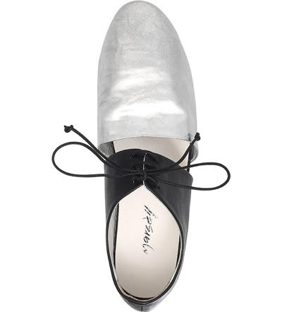
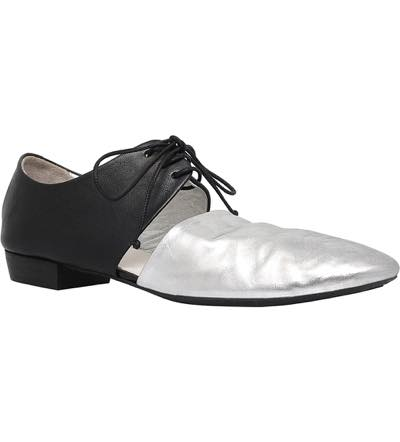
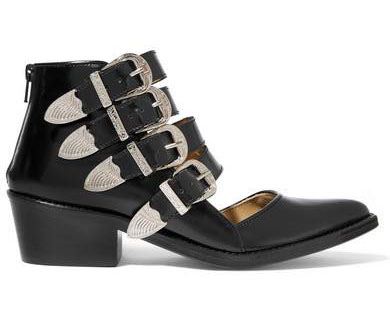
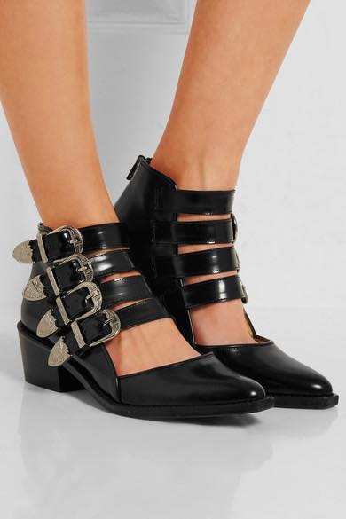
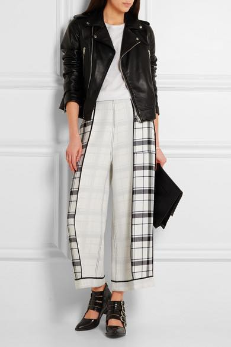

한국서 1년간 지내면서 엄마랑 동생곰이 젭알 옷이랑 신발좀 사라고 살 정도로
관심이 없었는데;;; 지금 생각해보니 구입한게...
MM6 가방 두개
도쿄서 츠모리치사토 가방 하나
겨울내리 신고다닌 탠디 앵클부츠
데무 에서 가죽자켓 / 날다람쥐같이 생긴 퍼 코트 하나
아..톰보이에서 옷을 무진장 샀구나 ㅋㅋㅋㅋ
아디다스 하얀색 운동화
빅토리아 슈즈 꽃분홍 플랫슈즈
정도? 안사진 않았네욤 ㅋㅋㅋㅋㅋ
애니웨이 ㅋㅋ
영쿡오자마자 쇼핑포텐 터졌습니다
게다가 여름셀기간 ㅋㅋㅋㅋㅋ
백화점 방문해도 직원에게 도움을 요청하기전에는 날 방목
+ 한국서는 장갑끼고 보여주는 브랜드 제품도 여기서는 아무렇지도 않게
신어보고 입어볼수 있음 + 다시 혼자 생활하다보니 남은 잉여력을 전부 쇼핑에 쏟아부음
으로 정신줄 놨어요 ㅋㅋㅋㅋㅋㅋㅋㅋㅋㅋ

전에 포스팅했던 마르셀 슈즈
사이즈없다고 포기하고있었는데
의외(?)로 37사이즈도 발이 들어가서
(내 사이즈는 UK5 / 38)
읭? 사...살까? 고민하는 동안 Farfetch에서 30% 세일돌입;;
우선 주문해보고 안맞으면 리턴시키지 뭐 싶어서
37.5 사이즈 주문 ㅋㅋㅋㅋ 지금 배송오는 중입니다.
오기전에 선글라스 제법 가격 나가는거 질러서 당분간 뭐 큰거 안사겠지 싶었는데
ㅡㅡ;; 그건 시작이었어요;;


이뿨 ㅜㅜ 왜 내 지인들은 이아이의 알흠다음에 동의안해주는거야 ㅋㅋㅋ
마법구두 / 오즈의 마법사 / 괴랄하다 등등의 이야기를 들었습니다 ㅋㅋㅋ
제가 37.5 마지막 하나 겟 했는데
셀프리지도 그렇고 farfetch도 그렇고 정말 빛의 속도로 빠져나가더군욤;;
이르케 또 비싸고 가아~~~끔 사용하는 아이템이 늘어갑니다;; (←내 가장 큰 문제 ㅋㅋㅋㅋ)
그리고 배송알람 멜 와서 우연히 다시 들어갔다가 발견한 TOGA 슈즈;;;

내취향 ;ㅂ; (= 버클많이달린거 ㅋㅋ 한결같음 ㅋㅋㅋ)
인터넷 찾아보니 일본브랜드 이더군욤
전 이번에 첨 알았습니다 :3
이건 net a porter 에서 50% 세일중


신발 자체 사진으로는 느므 예뻤는데
착용샷은 읭? 스러워서 고민하는 사이
이것도 제사이즈 빛의 속도로 품절되었어요......OTL
아 역시 우선 지르고 후회할걸;; 평소같으면 걍 에이 사이즈 없네 이러고
지나갈걸 의욕충만한 지금 우선 37사이즈 주문을 넣어봅니다 ㅡㅡ;;
받아서 함 신어보구 작으면 리턴하지 라고 맘먹는 이 의욕충만함;;;
(다른일을 이렇게 좀 열심히 해야;;;;)
해서 이것도 배송오는중 ^^;;;;
요며칠 studded / cut out shoes 란 키워드로 정말 열심히 찾아댕겼네용;;
인터넷 쇼핑의 무서운 점이
뭘 샀는데 아직 손에 들어온게 없으니까 자꾸 또 검색해보고
또 지르고 그럽니당;;;
셀프리지 다시 가면 내가 개다 라고 말했지만
난 분명 다시 가겠지....월월
갑자기 왜 구두쇼핑에 불타오르는지 저도 모르겠습니당;;;
글엄 저 두 신발이 내발에 맞을것이냐는
투비컨티뉴뉴뉴뉴뉴~~~~
OTL